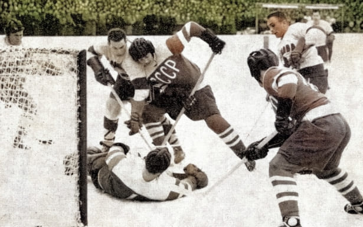
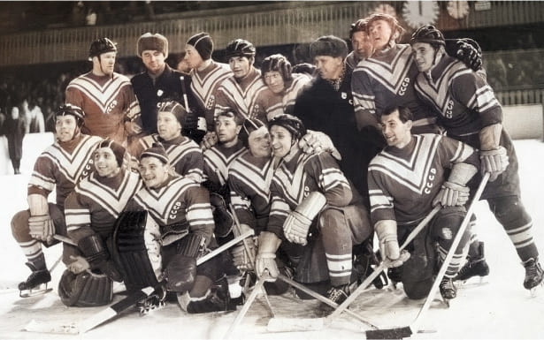
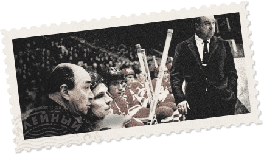
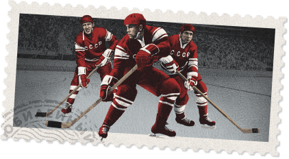
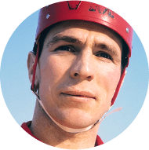
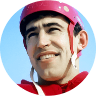

75 ЛЕТ ВЕЛИКОЙ ИСТОРИИ
В 2021 году наш хоккей празднует 75-летие.
Его история представляет собой яркую летопись громких побед и выдающихся достижений,
о которых можно рассказывать бесконечно.
Мы отобрали лишь несколько знаковых событий, ставших вехами этого славного пути.
Его история представляет собой яркую летопись громких побед и выдающихся достижений,
о которых можно рассказывать бесконечно.
Мы отобрали лишь несколько знаковых событий, ставших вехами этого славного пути.
1940-е
Канадская забава покоряет СССР
Хоккей с шайбой попал в Россию еще до революции, но долго не мог составить конкуренцию хоккею с мячом. Изредка матчи проводились и в 1930-е годы, также без особого успеха. По-настоящему эта игра обрела
популярность к 1946 году, когда было принято решение провести чемпионат СССР.
1946
Начало большого пути
22 декабря 1946 года считается датой зарождения хоккея с шайбой в нашей стране. В этот день в Москве, Ленинграде, Риге, Каунасе и Архангельске стартовал первый чемпионат СССР, в котором приняли участие 12 команд.
Турнир продлился чуть больше месяца и завершился 26 января победой московского «Динамо».


1950-е
Первые международные успехи
Популярность хоккея росла так стремительно, что ему стало тесно
в границах страны. Выход на мировую арену выдался успешным: сборная СССР в 1954 году с первой попытки выиграла дебютный чемпионат мира. Это дало огромный толчок к развитию игры
и положило начало регулярным противостояниям с иностранными командами в официальных и товарищеских матчах.
в границах страны. Выход на мировую арену выдался успешным: сборная СССР в 1954 году с первой попытки выиграла дебютный чемпионат мира. Это дало огромный толчок к развитию игры
и положило начало регулярным противостояниям с иностранными командами в официальных и товарищеских матчах.
1956
Олимпийское золото Кортины
Отстоять титул чемпионов мира в 1955 году советские хоккеисты не сумели, зато годом позже добились триумфа на Зимних Олимпийских играх в Кортина д’Ампеццо. Доминированию родоначальников хоккея, канадцев, пришел
конец, в истории игры началась новая, наша эпоха.
1960-е
Эпоха тотального доминирования
После олимпийского золота новых побед пришлось ждать несколько лет, но в 1963 году началась беспрецедентная серия успехов: до конца десятилетия советские хоккеисты не знали поражений ни в чемпионатах мира, ни
в олимпийских турнирах.


Аркадий Чернышёв
Конструктор великих побед
Ведущей силой в мировом хоккее советская сборная стала под руководством Аркадия Чернышёва, первого чемпиона СССР в составе московского «Динамо». Аркадий Иванович возглавлял сборную в 1954-57 и 1961-72 годах
и стал единственным тренером в истории, выигравшим четыре Олимпиады. Также он привел команду к 11 победам в чемпионатах мира.
1970-е
«Красная машина» набирает ход
В 1971 году сборная СССР выиграла девятый чемпионат мира подряд – эта серия побед стала самой продолжительной в истории хоккея. И с легкой руки любящих яркие образы североамериканских журналистов наша команда
получила прозвище «Красная машина».
Горячий лёд холодной войны
Противостояние советских и канадских хоккеистов всегда носило самый принципиальный характер. И вот оно вышло на новый уровень: в 1972 и 1974 годах по обе стороны Атлантики прошли матчи Суперсерий, в рамках
которых наши игроки встретились с канадскими профессионалами. Эти встречи вызвали колоссальный интерес и показали: лучшие представители двух ведущих хоккейных держав достойны друг друга.
1980-е
Новый уровень великого противостояния
Вслед за Суперсериями соперничество между СССР и Канадой продолжилось на клубном уровне. Такие матчи на рубеже двух десятилетий проводились ежегодно. А в 1981 году великое противостояние вышло на новый уровень:
состоялся первый розыгрыш Кубка Канады с участием шести ведущих сборных мира. Турнир закончился победой сборной СССР, разгромившей в финале Канаду – 8:1.
Шесть рекордсменов
На Олимпиаде-84 Владислав Третьяк завоевал третью золотую медаль. А Андрей Хомутов – только первую. Но и он со временем сумел войти в узкий круг рекордсменов. История хоккея знает лишь шестерых трехкратных
олимпийских чемпионов, и все они – наши соотечественники:

Виталий Давыдов
Виктор Кузькин
Александр Рагулин

Владислав Третьяк

Анатолий Фирсов
Андрей Хомутов
1990-е
Новые времена, новые чемпионы
Геополитическая картина мира начала стремительно меняться. Изменялись границы и названия нашей страны, с ними менялись формат, структура и названия внутреннего первенства: чемпионат СССР, чемпионат СНГ,
Межнациональная хоккейная лига… Символом перемен стала победа тольяттинской «Лады» в 1994 году. Это был первый в истории чемпионский титул немосковской команды.
Название не имеет значения
Вынужденно меняла названия и наша сборная: на Олимпиаде-92 она выступила как Объединенная команда, а на чемпионате мира-93 – уже как сборная России. Но ведущей роли в мировом хоккее она не утратила, оба
турнира были выиграны. В каком-то смысле это был конец одной главы, в каком-то – начало новой. Победные же традиции, что важно, остались неизменны.
2000-е
А ну-ка, девушки!
Проявить себя на мировой арене сумела и женская сборная России. Созданная в 1994 году команда в 2001-м впервые поднялась на пьедестал почета чемпионата мира. С турнира в Миннеаполисе наши девушки вернулись с
бронзовыми наградами. С тех пор этот результат был повторен еще дважды.
2008-09
Возвращение на вершину
Большие успехи некоторое время обходили нас стороной, но продолжалось это недолго. Олимпийские медали 1998 и 2002 годов свидетельствовали о том, что команда находится на верном пути, и в конце десятилетия
возвращение на вершину состоялось. Сборная России выиграла чемпионат мира-2008, обыграв в финале Канаду на ее льду, а годом позже в Швейцарии отстояла свой титул.

2010-е
«Красная машина.
Новая сборка»
Победные традиции не поддерживаются сами собой, медали и титулы не распределяются по разнарядке. Каждый успех становится следствием целенаправленной системной работы. Сознавая это,
ФХР разработала комплексную Национальную программу подготовки хоккеистов «Красная машина», призванную поставить процесс воспитания юных игроков на научную основу.
Долгожданный триумф в Пхёнчхане
Периодически покоряя вершины мировых первенств (в 2012 и 2014 годах), наша команда долгое время не могла добиться успеха в олимпийском турнире. 2018 год положил конец ожиданию: из Южной Кореи россияне вернулись с
золотыми медалями. Это случилось впервые в новейшей истории страны и окончательно подтвердило обоснованность притязаний хоккейной России на роль преемницы великой советской сборной.
В будущее –
с уверенностью
с уверенностью
Новое десятилетие только началось. Каким оно будет, нам знать не дано. Но есть все основания верить в то, что развитие нашего хоккея продолжится бурными темпами, и в преддверии следующего юбилея мы сможем
рассказать о новых победах и успехах. «Красная машина» продолжает свой путь, смена нынешним мастерам растет. А значит, лучшее – впереди!